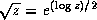

Common Lisp the Language, 2nd Edition


Next: Type Conversions and
Up: Irrational and Transcendental
Previous: Trigonometric and Related
Many
of the irrational and transcendental functions are multiply defined
in the complex domain; for example, there are in general an infinite
number of complex values for the logarithm function. In each such
case, a principal value must be chosen for the function to return.
In general, such values cannot be chosen so as to make the range
continuous; lines in the domain
called branch cuts must be defined, which in turn
define the discontinuities in the range.
Common Lisp defines the branch cuts, principal values, and boundary
conditions for the complex functions following
a proposal for complex functions in APL [36].
The contents of this section are borrowed largely from that proposal.
Compatibility note: The branch cuts defined here differ in a few very minor
respects from those advanced by W. Kahan, who considers not only the
``usual'' definitions but also the special modifications necessary for
IEEE proposed floating-point arithmetic, which has infinities and
minus zero as explicit computational objects. For example, he proposes
that SQRT(-4+0i)=2i, but SQRT(-4-0i)=-2i.
It may be that the differences between the APL proposal and Kahan's
proposal will be ironed out. If so, Common Lisp may be
changed as necessary to be compatible with these other groups. Any changes
from the specification below are likely to be quite minor,
probably concerning primarily questions of which side of a branch cut
is continuous with the cut itself.

Indeed, X3J13 voted in January 1989
(COMPLEX-ATAN-BRANCH-CUT)
to alter the direction of continuity for
the branch cuts of atan, and also
(IEEE-ATAN-BRANCH-CUT)
to address the treatment of branch cuts
in implementations that have a distinct floating-point minus zero.
The treatment of minus zero centers in two-argument atan.
If there is no minus zero, then the branch cut runs just below the negative real
axis as before, and the range of two-argument atan is .
If there is a minus zero, however, then the branch cut runs precisely on the negative real
axis, skittering between pairs of numbers of the form -x+/-0i,
and the range of two-argument atan is  .
.
The treatment of minus zero by all other irrational and transcendental functions
is then specified by defining those functions in terms of two-argument atan.
First, phase is defined in terms of two-argument atan, and
complex abs in terms of real sqrt;
then complex log is defined in terms of phase, abs, and real log;
then complex sqrt in terms of complex log;
and finally all others are defined in terms of these.
Kahan [25] treats these matters in some detail and also
suggests specific algorithms for implementing irrational and transcendental functions
in IEEE standard floating-point arithmetic [23].
Remarks in the first edition about the direction of the continuity of branch
cuts continue to hold in the absence of minus zero and may be ignored if minus zero
is supported; since all branch cuts happen to run along the principal axes, they
run between plus zero and minus zero, and so each sort of zero is associated
with the obvious quadrant.

- sqrt
-
The branch cut for square root lies along the negative real axis,
continuous with quadrant II.
The range consists of the right half-plane, including the non-negative
imaginary axis and excluding the negative imaginary axis.
-
X3J13 voted in January 1989
(IEEE-ATAN-BRANCH-CUT)
to specify certain floating-point behavior when minus zero is supported.
As a part of that vote it approved a mathematical definition of complex square root:

This defines the branch cuts precisely, whether minus zero is supported or not.
-
- phase
-
The branch cut for the phase function lies along the negative real
axis, continuous with quadrant II. The range consists of that portion of
the real axis between -pi (exclusive) and pi (inclusive).
-
X3J13 voted in January 1989
(IEEE-ATAN-BRANCH-CUT)
to specify certain floating-point behavior when minus zero is supported.
As a part of that vote it approved a mathematical definition of phase:
where Fz is the imaginary part of z and Rz the real part of z.
This defines the branch cuts precisely, whether minus zero is supported or not.
-
- log
-
The branch cut for the logarithm function of one argument (natural
logarithm) lies along the negative real axis, continuous with quadrant II.
The domain excludes the origin. For a complex number z,
z is defined to be
log z = (log|z|) + i(phase z)
Therefore the range of the one-argument logarithm function is that strip
of the complex plane containing numbers with imaginary parts between
-pi (exclusive) and pi (inclusive).
The X3J13 vote on minus zero
(IEEE-ATAN-BRANCH-CUT)
would alter that exclusive bound of -pi to be inclusive if minus zero is supported.
The two-argument logarithm function is defined as .
This defines the principal values precisely. The range of the two-argument
logarithm function is the entire complex plane.
It is an error if z is zero. If z is non-zero and b is zero,
the logarithm is taken to be zero.
- exp
-
The simple exponential function has no branch cut.
- expt
-
The two-argument exponential function is defined
as .
This defines the principal values precisely. The range of the
two-argument exponential function is the entire complex plane. Regarded
as a function of x, with b fixed, there is no branch cut.
Regarded as a function of b, with x fixed, there is in general
a branch cut along the negative real axis, continuous with quadrant II.
The domain excludes the origin.
By definition, . If b=0 and the real part of x is strictly
positive, then .
For all other values of x,
is an error.
- asin
-
The following definition for arc sine determines the range and
branch cuts:
This is equivalent to the formula
recommended by Kahan [25].
The branch cut for the arc sine function is in two pieces:
one along the negative real axis to the left of -1
(inclusive), continuous with quadrant II, and one along the positive real
axis to the right of 1 (inclusive), continuous with quadrant IV. The
range is that strip of the complex plane containing numbers whose real
part is between  and . A number with real
part equal to is in the range if and only if its imaginary
part is non-negative; a number with real part equal to is in
the range if and only if its imaginary part is non-positive.
and . A number with real
part equal to is in the range if and only if its imaginary
part is non-negative; a number with real part equal to is in
the range if and only if its imaginary part is non-positive.
- acos
-
The following definition for arc cosine determines the range and
branch cuts:
or, which is equivalent,
The branch cut for the arc cosine function is in two pieces:
one along the negative real axis to the left of -1
(inclusive), continuous with quadrant II, and one along the positive real
axis to the right of 1 (inclusive), continuous with quadrant IV.
This is the same branch cut as for arc sine.
The range is that strip of the complex plane containing numbers whose real
part is between zero and pi. A number with real
part equal to zero is in the range if and only if its imaginary
part is non-negative; a number with real part equal to pi is in
the range if and only if its imaginary part is non-positive.
- atan
-
The following definition for (one-argument) arc tangent determines the
range and branch cuts:

-
Beware of simplifying this formula; ``obvious'' simplifications are likely
to alter the branch cuts or the values on the branch cuts incorrectly.
The branch cut for the arc tangent function is in two pieces:
one along the positive imaginary axis above i
(exclusive), continuous with quadrant II, and one along the negative imaginary
axis below -i (exclusive), continuous with quadrant IV.
The points i and -i are excluded from the domain.
The range is that strip of the complex plane containing numbers whose real
part is between and . A number with real
part equal to is in the range if and only if its imaginary
part is strictly positive; a number with real part equal to is in
the range if and only if its imaginary part is strictly negative. Thus the range of
the arc tangent function is identical to that of the arc sine function with the points
and excluded.

-
X3J13 voted in January 1989
(COMPLEX-ATAN-BRANCH-CUT)
to replace the formula shown above with the formula
This is equivalent to the formula
recommended by Kahan [25].
It causes the upper branch cut to be continuous with
quadrant I rather than quadrant II, and the lower branch cut to
be continuous with quadrant III rather than quadrant IV; otherwise it agrees with the
formula of the first edition. Therefore this change alters the result returned by atan
only for arguments on the positive imaginary axis that
are of magnitude greater than 1. The full description for this new formula is as follows.
The branch cut for the arc tangent function is in two pieces:
one along the positive imaginary axis above i
(exclusive), continuous with quadrant I, and one along the negative imaginary
axis below -i (exclusive), continuous with quadrant III.
The points i and -i are excluded from the domain.
The range is that strip of the complex plane containing numbers whose real
part is between and . A number with real
part equal to is in the range if and only if its imaginary
part is strictly negative; a number with real part equal to is in
the range if and only if its imaginary part is strictly positive. Thus the range of
the arc tangent function is not identical to that of the arc sine function.
- asinh
-
The following definition for the inverse hyperbolic sine determines
the range and branch cuts:

The branch cut for the inverse hyperbolic sine function is in two pieces:
one along the positive imaginary axis above i
(inclusive), continuous with quadrant I, and one along the negative imaginary
axis below -i (inclusive), continuous with quadrant III.
The range is that strip of the complex plane containing numbers whose imaginary
part is between and . A number with imaginary
part equal to is in the range if and only if its real
part is non-positive; a number with imaginary part equal to is in
the range if and only if its real part is non-negative.
- acosh
-
The following definition for the inverse hyperbolic cosine
determines the range and branch cuts:
-
Kahan [25] suggests the formula
pointing out that it yields the same principal value but eliminates
a gratuitous removable singularity at z=-1.
A proposal was submitted to X3J13 in September 1989 to replace the
formula acosh with that recommended by Kahan.
There is a good possibility that it will be adopted.
-
The branch cut for the inverse hyperbolic cosine function
lies along the real axis to the left of 1 (inclusive), extending
indefinitely along the negative real axis, continuous with quadrant II
and (between 0 and 1) with quadrant I.
The range is that half-strip of the complex plane containing numbers whose
real part is non-negative and whose imaginary
part is between -pi (exclusive) and pi (inclusive).
A number with real part zero is in the range
if its imaginary part is between zero (inclusive) and pi (inclusive).
- atanh
-
The following definition for the inverse hyperbolic tangent
determines the range and branch cuts:
-
WRONG!
-
WARNING! The formula shown above for hyperbolic arc tangent is incorrect.
It is not a matter of incorrect branch cuts; it simply does not compute anything
like a hyperbolic arc tangent. This unfortunate error in the first edition
was the result of mistranscribing a (correct) APL formula from Penfield's paper
[36]. The formula should have been transcribed as
-
Beware of simplifying this formula; ``obvious'' simplifications are
likely to alter the branch cuts or the values on the branch cuts
incorrectly.
The branch cut for the inverse hyperbolic tangent function
is in two pieces: one along the negative real axis to the left of
-1 (inclusive), continuous with quadrant III, and one along
the positive real axis to the right of 1 (inclusive), continuous with
quadrant I. The points -1 and 1 are excluded from the
domain.
The range is that strip of the complex plane containing
numbers whose imaginary part is between and
. A number with imaginary part equal to
is in the range if and only if its real part is strictly negative; a number with
imaginary part equal to is in the range if and only if its real
part is strictly positive. Thus the range of the inverse
hyperbolic tangent function is identical to
that of the inverse hyperbolic sine function with the points
and excluded.
-
A proposal was submitted to X3J13 in September 1989 to replace the
formula atanh with that recommended by Kahan [25]:
There is a good possibility that it will be adopted. If it is, the complete
description of the branch cuts of atanh will then be as follows.
The branch cut for the inverse hyperbolic tangent function
is in two pieces: one along the negative real axis to the left of
-1 (inclusive), continuous with quadrant II, and one along
the positive real axis to the right of 1 (inclusive), continuous with
quadrant IV. The points -1 and 1 are excluded from the
domain.
The range is that strip of the complex plane containing
numbers whose imaginary part is between and
. A number with imaginary part equal to
is in the range if and only if its real part is strictly positive; a number with
imaginary part equal to is in the range if and only if its real
part is strictly negative. Thus the range of the inverse
hyperbolic tangent function is not the same as
that of the inverse hyperbolic sine function.
With these definitions, the following useful identities are obeyed
throughout the applicable portion of the complex domain, even on
the branch cuts:
sin iz = i sinh z sinh iz = i sin z arctan iz = i arctanh z
cos iz = cosh z cosh iz = cos z arcsinh iz = i arcsin z
tan iz = i tanh z arcsin iz = i arcsinh z arctanh iz = i arctan z
I thought it would be useful to provide some graphs illustrating the behavior
of the irrational and transcendental functions in the complex plane.
It also provides an opportunity to show off the Common Lisp code that
was used to generate them.
Imagine the complex plane to be decorated
as follows. The real and imaginary axes are painted with thick lines.
Parallels from the axes on both sides at distances of 1, 2, and 3 are painted
with thin lines; these parallels are doubly infinite lines, as are the axes.
Four annuli (rings) are painted in gradated shades of gray. Ring 1, the inner ring,
consists of points whose radial distances from the origin lie in the range
[1/4, 1/2]; ring 2 is in the radial range [3/4, 1]; ring 3, in the range
[pi/2, 2]; and ring 4, in the range [3, pi].
Ring j is divided into equal sectors, with each sector
painted a different shade of gray, darkening as one proceeds counterclockwise
from the positive real axis.
We can illustrate the behavior of a numerical function f by considering how
it maps the complex plane to itself. More specifically, consider each
point z of the decorated plane. We decorate a new plane by coloring
the point f(z) with the same color that point z had in the original
decorated plane. In other words, the newly decorated plane illustrates
how the f maps the axes, other horizontal and vertical lines, and annuli.
In each figure we will show only a fragment of the complex plane,
with the real axis horizontal in the usual manner (-pi to the left, +pi
to the right) and the imaginary axis vertical (-i below, +pii
above). Each fragment shows a region containing points whose real and imaginary
parts are in the range [-4.1, 4.1]. The axes of the new plane are shown as very
thin lines, with large tick marks at integer coordinates and somewhat smaller
tick marks at multiples of .
Figure 12-1 shows the result of plotting the identity function
(quite literally); the graph exhibits the decoration of the original plane.
Figures 12-2 through 12-20 show the graphs for the functions
sqrt, exp, log, sin, asin, cos, acos, tan, atan,
sinh, asinh, cosh, acosh, tanh, and atanh, and
as a bonus, the graphs for the functions ,
, , and . All of these are related
to the trigonometric functions in various ways. For example, if
, then , and if , then
. It is instructive to examine the graph for
and try to visualize how it transforms the graph for sin into the graph for cos.
Each figure is accompanied by a commentary on what maps to what and other interesting
features. None of this material is terribly new; much of it may be found in any
good textbook on complex analysis. I believe that the particular form in which the
graphs are presented is novel, as well as the fact that the graphs have been generated
as PostScript [1] code by Common Lisp code. This PostScript
code was then fed directly to the typesetting equipment that set the pages for this book.
Samples of this PostScript code follow the figures themselves,
after which the code for the entire program is presented.
In the commentaries that accompany the figures I
sometimes speak of mapping the points +/- infinity or +/- infinity i.
When I say that function f maps +infinity to a certain point z, I mean that
Similarly, when I say that f maps
-i to z, I mean that
In other words, I am considering a limit as one travels out along one of the
main axes. I also speak in a similar manner of mapping to one of these
infinities.
Here is a sample of the PostScript code that generated
figure 12-1, showing the initial scaling,
translation, and clipping parameters; the code for one
sector of the innermost annulus; and the code for the negative
imaginary axis. Comment lines indicate how path or boundary
segments were generated separately and then spliced (in order to
allow for the places that a singularity might lurk, in which case
the generating code can ``inch up'' to the problematical argument
value).
The size of the entire PostScript file for the
identity function was about 68 kilobytes (2757 lines, including comments).
The smallest files
were the plots for atan and atanh, about 65 kilobytes apiece;
the largest were the plots for sin, cos, sinh, and cosh,
about 138 kilobytes apiece.
% PostScript file for plot of function IDENTITY
% Plot is to fit in a region 4.666666666666667 inches square
% showing axes extending 4.1 units from the origin.
40.97560975609756 40.97560975609756 scale
4.1 4.1 translate
newpath
-4.1 -4.1 moveto
4.1 -4.1 lineto
4.1 4.1 lineto
-4.1 4.1 lineto
closepath
clip
% Moby grid for function IDENTITY
% Annulus 0.25 0.5 4 0.97 0.45
% Sector from 4.7124 to 6.2832 (quadrant 3)
newpath
0.0 -0.25 moveto
0.0 -0.375 lineto
%middle radial
0.0 -0.375 lineto
0.0 -0.5 lineto
%end radial
0.0 -0.5 lineto
0.092 -0.4915 lineto
0.1843 -0.4648 lineto
0.273 -0.4189 lineto
0.3536 -0.3536 lineto
%middle circumferential
0.3536 -0.3536 lineto
0.413 -0.2818 lineto
0.4594 -0.1974 lineto
0.4894 -0.1024 lineto
0.5 0.0 lineto
%end circumferential
0.5 0.0 lineto
0.375 0.0 lineto
%middle radial
0.375 0.0 lineto
0.25 0.0 lineto
%end radial
0.25 0.0 lineto
0.2297 -0.0987 lineto
0.1768 -0.1768 lineto
%middle circumferential
0.1768 -0.1768 lineto
0.0922 -0.2324 lineto
0.0 -0.25 lineto
%end circumferential
closepath
currentgray 0.45 setgray fill setgray
[2598 lines omitted]
% Vertical line from (0.0, -0.5) to (0.0, 0.0)
newpath
0.0 -0.5 moveto
0.0 0.0 lineto
0.05 setlinewidth 1 setlinecap stroke
% Vertical line from (0.0, -0.5) to (0.0, -1.0)
newpath
0.0 -0.5 moveto
0.0 -1.0 lineto
0.05 setlinewidth 1 setlinecap stroke
% Vertical line from (0.0, -2.0) to (0.0, -1.0)
newpath
0.0 -2.0 moveto
0.0 -1.0 lineto
0.05 setlinewidth 1 setlinecap stroke
% Vertical line from (0.0, -2.0) to (0.0, -1.1579208923731617E77)
newpath
0.0 -2.0 moveto
0.0 -6.3553 lineto
0.0 -6.378103166302659 lineto
0.0 -6.378103166302659 lineto
0.0 -6.378103166302659 lineto
0.05 setlinewidth 1 setlinecap stroke
[84 lines omitted]
% End of PostScript file for plot of function IDENTITY
Here is the program that generated the PostScript code for
the graphs shown in figures 12-1 through 12-20.
It contains a mixture of fairly general mechanisms and ad hoc kludges
for plotting functions of a single complex argument while gracefully handling
extremely large and small values,
branch cuts, singularities, and periodic behavior.
The aim was to provide a simple user interface that would not
require the caller to provide special advice for each function
to be plotted.
The file for figure 12-1, for example, was generated
by the call (picture 'identity), which resulted in the writing of
a file named identity-plot.ps.
The program assumes that any periodic behavior will have a period that is a multiple of
2pi; that branch cuts will fall along the real or imaginary axis;
and that singularities or very large or small values
will occur only at the origin, at 1 or +/-i,
or on the boundaries of the annuli (particularly those with radius or pi).
The central function is parametric-path, which accepts four arguments:
two real numbers that are the endpoints of an interval of real numbers,
a function that maps this interval into a path in the complex plane,
and the function to be plotted; the task of parametric-path is to
generate PostScript code (a series of lineto operations)
that will plot an approximation to the image of the parametric path
as transformed by the function to be plotted.
Each of the functions hline, vline, -hline, -vline, radial,
and circumferential takes appropriate parameters
and returns a function suitable for use as the third argument
to parametric-path.
There is some code that defends against errors
(by using ignore-errors) and against certain peculiarities of
IEEE floating-point arithmetic (the code that checks for not-a-number (NaN) results).
The program is offered here without further comment or apology.
(defparameter units-to-show 4.1)
(defparameter text-width-in-picas 28.0)
(defparameter device-pixels-per-inch 300)
(defparameter pixels-per-unit
(* (/ (/ text-width-in-picas 6)
(* units-to-show 2))
device-pixels-per-inch))
(defparameter big (sqrt (sqrt most-positive-single-float)))
(defparameter tiny (sqrt (sqrt least-positive-single-float)))
(defparameter path-really-losing 1000.0)
(defparameter path-outer-limit (* units-to-show (sqrt 2) 1.1))
(defparameter path-minimal-delta (/ 10 pixels-per-unit))
(defparameter path-outer-delta (* path-outer-limit 0.3))
(defparameter path-relative-closeness 0.00001)
(defparameter back-off-delta 0.0005)
(defun comment-line (stream &rest stuff)
(format stream "~%% ")
(apply #'format stream stuff)
(format t "~%% ")
(apply #'format t stuff))
(defun parametric-path (from to paramfn plotfn)
(assert (and (plusp from) (plusp to)))
(flet ((domainval (x) (funcall paramfn x))
(rangeval (x) (funcall plotfn (funcall paramfn x)))
(losing (x) (or (null x)
(/= (realpart x) (realpart x)) ;NaN?
(/= (imagpart x) (imagpart x)) ;NaN?
(> (abs (realpart x)) path-really-losing)
(> (abs (imagpart x)) path-really-losing))))
(when (> to 1000.0)
(let ((f0 (rangeval from))
(f1 (rangeval (+ from 1)))
(f2 (rangeval (+ from (* 2 pi))))
(f3 (rangeval (+ from 1 (* 2 pi))))
(f4 (rangeval (+ from (* 4 pi)))))
(flet ((close (x y)
(or (< (careful-abs (- x y)) path-minimal-delta)
(< (careful-abs (- x y))
(* (+ (careful-abs x) (careful-abs y))
path-relative-closeness)))))
(when (and (close f0 f2)
(close f2 f4)
(close f1 f3)
(or (and (close f0 f1)
(close f2 f3))
(and (not (close f0 f1))
(not (close f2 f3)))))
(format t "~&Periodicity detected.")
(setq to (+ from (* (signum (- to from)) 2 pi)))))))
(let ((fromrange (ignore-errors (rangeval from)))
(torange (ignore-errors (rangeval to))))
(if (losing fromrange)
(if (losing torange)
'()
(parametric-path (back-off from to) to paramfn plotfn))
(if (losing torange)
(parametric-path from (back-off to from) paramfn plotfn)
(expand-path (refine-path (list from to) #'rangeval)
#'rangeval))))))
(defun back-off (point other)
(if (or (> point 10.0) (< point 0.1))
(let ((sp (sqrt point)))
(if (or (> point sp other) (< point sp other))
sp
(* sp (sqrt other))))
(+ point (* (signum (- other point)) back-off-delta))))
(defun careful-abs (z)
(cond ((or (> (realpart z) big)
(< (realpart z) (- big))
(> (imagpart z) big)
(< (imagpart z) (- big)))
big)
((complexp z) (abs z))
((minusp z) (- z))
(t z)))
(defparameter max-refinements 5000)
(defun refine-path (original-path rangevalfn)
(flet ((rangeval (x) (funcall rangevalfn x)))
(let ((path original-path))
(do ((j 0 (+ j 1)))
((null (rest path)))
(when (zerop (mod (+ j 1) max-refinements))
(break "Runaway path"))
(let* ((from (first path))
(to (second path))
(fromrange (rangeval from))
(torange (rangeval to))
(dist (careful-abs (- torange fromrange)))
(mid (* (sqrt from) (sqrt to)))
(midrange (rangeval mid)))
(cond ((or (and (far-out fromrange) (far-out torange))
(and (< dist path-minimal-delta)
(< (abs (- midrange fromrange))
path-minimal-delta)
;; Next test is intentionally asymmetric to
;; avoid problems with periodic functions.
(< (abs (- (rangeval (/ (+ to (* from 1.5))
2.5))
fromrange))
path-minimal-delta)))
(pop path))
((= mid from) (pop path))
((= mid to) (pop path))
(t (setf (rest path) (cons mid (rest path)))))))))
original-path)
(defun expand-path (path rangevalfn)
(flet ((rangeval (x) (funcall rangevalfn x)))
(let ((final-path (list (rangeval (first path)))))
(do ((p (rest path) (cdr p)))
((null p)
(unless (rest final-path)
(break "Singleton path"))
(reverse final-path))
(let ((v (rangeval (car p))))
(cond ((and (rest final-path)
(not (far-out v))
(not (far-out (first final-path)))
(between v (first final-path)
(second final-path)))
(setf (first final-path) v))
((null (rest p)) ;Mustn't omit last point
(push v final-path))
((< (abs (- v (first final-path))) path-minimal-delta))
((far-out v)
(unless (and (far-out (first final-path))
(< (abs (- v (first final-path)))
path-outer-delta))
(push (* 1.01 path-outer-limit (signum v))
final-path)))
(t (push v final-path))))))))
(defun far-out (x)
(> (careful-abs x) path-outer-limit))
(defparameter between-tolerance 0.000001)
(defun between (p q r)
(let ((px (realpart p)) (py (imagpart p))
(qx (realpart q)) (qy (imagpart q))
(rx (realpart r)) (ry (imagpart r)))
(and (or (<= px qx rx) (>= px qx rx))
(or (<= py qy ry) (>= py qy ry))
(< (abs (- (* (- qx px) (- ry qy))
(* (- rx qx) (- qy py))))
between-tolerance))))
(defun circle (radius)
#'(lambda (angle) (* radius (cis angle))))
(defun hline (imag)
#'(lambda (real) (complex real imag)))
(defun vline (real)
#'(lambda (imag) (complex real imag)))
(defun -hline (imag)
#'(lambda (real) (complex (- real) imag)))
(defun -vline (real)
#'(lambda (imag) (complex real (- imag))))
(defun radial (phi quadrant)
#'(lambda (rho) (repair-quadrant (* rho (cis phi)) quadrant)))
(defun circumferential (rho quadrant)
#'(lambda (phi) (repair-quadrant (* rho (cis phi)) quadrant)))
;;; Quadrant is 0, 1, 2, or 3, meaning I, II, III, or IV.
(defun repair-quadrant (z quadrant)
(complex (* (+ (abs (realpart z)) tiny)
(case quadrant (0 1.0) (1 -1.0) (2 -1.0) (3 1.0)))
(* (+ (abs (imagpart z)) tiny)
(case quadrant (0 1.0) (1 1.0) (2 -1.0) (3 -1.0)))))
(defun clamp-real (x)
(if (far-out x)
(* (signum x) path-outer-limit)
(round-real x)))
(defun round-real (x)
(/ (round (* x 10000.0)) 10000.0))
(defun round-point (z)
(complex (round-real (realpart z)) (round-real (imagpart z))))
(defparameter hiringshade 0.97)
(defparameter loringshade 0.45)
(defparameter ticklength 0.12)
(defparameter smallticklength 0.09)
;;; This determines the pattern of lines and annuli to be drawn.
(defun moby-grid (&optional (fn 'sqrt) (stream t))
(comment-line stream "Moby grid for function ~S" fn)
(shaded-annulus 0.25 0.5 4 hiringshade loringshade fn stream)
(shaded-annulus 0.75 1.0 8 hiringshade loringshade fn stream)
(shaded-annulus (/ pi 2) 2.0 16 hiringshade loringshade fn stream)
(shaded-annulus 3 pi 32 hiringshade loringshade fn stream)
(moby-lines :horizontal 1.0 fn stream)
(moby-lines :horizontal -1.0 fn stream)
(moby-lines :vertical 1.0 fn stream)
(moby-lines :vertical -1.0 fn stream)
(let ((tickline 0.015)
(axisline 0.008))
(flet ((tick (n) (straight-line (complex n ticklength)
(complex n (- ticklength))
tickline
stream))
(smalltick (n) (straight-line (complex n smallticklength)
(complex n (- smallticklength))
tickline
stream)))
(comment-line stream "Real axis")
(straight-line #c(-5 0) #c(5 0) axisline stream)
(dotimes (j (floor units-to-show))
(let ((q (+ j 1))) (tick q) (tick (- q))))
(dotimes (j (floor units-to-show (/ pi 2)))
(let ((q (* (/ pi 2) (+ j 1))))
(smalltick q)
(smalltick (- q)))))
(flet ((tick (n) (straight-line (complex ticklength n)
(complex (- ticklength) n)
tickline
stream))
(smalltick (n) (straight-line (complex smallticklength n)
(complex (- smallticklength) n)
tickline
stream)))
(comment-line stream "Imaginary axis")
(straight-line #c(0 -5) #c(0 5) axisline stream)
(dotimes (j (floor units-to-show))
(let ((q (+ j 1))) (tick q) (tick (- q))))
(dotimes (j (floor units-to-show (/ pi 2)))
(let ((q (* (/ pi 2) (+ j 1))))
(smalltick q)
(smalltick (- q)))))))
(defun straight-line (from to wid stream)
(format stream
"~%newpath ~S ~S moveto ~S ~S lineto ~S ~
setlinewidth 1 setlinecap stroke"
(realpart from)
(imagpart from)
(realpart to)
(imagpart to)
;;; This function draws the lines for the pattern.
(defun moby-lines (orientation signum plotfn stream)
(let ((paramfn (ecase orientation
(:horizontal (if (< signum 0) #'-hline #'hline))
(:vertical (if (< signum 0) #'-vline #'vline)))))
(flet ((foo (from to other wid)
(ecase orientation
(:horizontal
(comment-line stream
"Horizontal line from (~S, ~S) to (~S, ~S)"
(round-real (* signum from))
(round-real other)
(round-real (* signum to))
(round-real other)))
(:vertical
(comment-line stream
"Vertical line from (~S, ~S) to (~S, ~S)"
(round-real other)
(round-real (* signum from))
(round-real other)
(round-real (* signum to)))))
(postscript-path
stream
(parametric-path from
to
(funcall paramfn other)
plotfn))
(postscript-penstroke stream wid)))
(let* ((thick 0.05)
(thin 0.02))
;; Main axis
(foo 0.5 tiny 0.0 thick)
(foo 0.5 1.0 0.0 thick)
(foo 2.0 1.0 0.0 thick)
(foo 2.0 big 0.0 thick)
;; Parallels at 1 and -1
(foo 2.0 tiny 1.0 thin)
(foo 2.0 big 1.0 thin)
(foo 2.0 tiny -1.0 thin)
(foo 2.0 big -1.0 thin)
;; Parallels at 2, 3, -2, -3
(foo tiny big 2.0 thin)
(foo tiny big -2.0 thin)
(foo tiny big 3.0 thin)
(foo tiny big -3.0 thin)))))
(defun splice (p q)
(let ((v (car (last p)))
(w (first q)))
(and (far-out v)
(far-out w)
(>= (abs (- v w)) path-outer-delta)
;; Two far-apart far-out points. Try to walk around
;; outside the perimeter, in the shorter direction.
(let* ((pdiff (phase (/ v w)))
(npoints (floor (abs pdiff) (asin .2)))
(delta (/ pdiff (+ npoints 1)))
(incr (cis delta)))
(do ((j 0 (+ j 1))
(p (list w "end splice") (cons (* (car p) incr) p)))
;;; This function draws the annuli for the pattern.
(defun shaded-annulus (inner outer sectors firstshade lastshade fn stream)
(assert (zerop (mod sectors 4)))
(comment-line stream "Annulus ~S ~S ~S ~S ~S"
(round-real inner) (round-real outer)
sectors firstshade lastshade)
(dotimes (jj sectors)
(let ((j (- sectors jj 1)))
(let* ((lophase (+ tiny (* 2 pi (/ j sectors))))
(hiphase (* 2 pi (/ (+ j 1) sectors)))
(midphase (/ (+ lophase hiphase) 2.0))
(midradius (/ (+ inner outer) 2.0))
(quadrant (floor (* j 4) sectors)))
(comment-line stream "Sector from ~S to ~S (quadrant ~S)"
(round-real lophase)
(round-real hiphase)
quadrant)
(let ((p0 (reverse (parametric-path midradius
inner
(radial lophase quadrant)
fn)))
(p1 (parametric-path midradius
outer
(radial lophase quadrant)
fn))
(p2 (reverse (parametric-path midphase
lophase
(circumferential outer
quadrant)
fn)))
(p3 (parametric-path midphase
hiphase
(circumferential outer quadrant)
fn))
(p4 (reverse (parametric-path midradius
outer
(radial hiphase quadrant)
fn)))
(p5 (parametric-path midradius
inner
(radial hiphase quadrant)
fn))
(p6 (reverse (parametric-path midphase
hiphase
(circumferential inner
quadrant)
fn)))
(p7 (parametric-path midphase
lophase
(circumferential inner quadrant)
fn)))
(postscript-closed-path stream
(append
p0 (splice p0 p1) '("middle radial")
p1 (splice p1 p2) '("end radial")
p2 (splice p2 p3) '("middle circumferential")
p3 (splice p3 p4) '("end circumferential")
p4 (splice p4 p5) '("middle radial")
p5 (splice p5 p6) '("end radial")
p6 (splice p6 p7) '("middle circumferential")
p7 (splice p7 p0) '("end circumferential")
)))
(postscript-shade stream
(/ (+ (* firstshade (- (- sectors 1) j))
(* lastshade j))
(- sectors 1)))))))
(defun postscript-penstroke (stream wid)
(format stream "~%~S setlinewidth 1 setlinecap stroke"
wid))
(defun postscript-shade (stream shade)
(format stream "~%currentgray ~S setgray fill setgray"
shade))
(defun postscript-closed-path (stream path)
(unless (every #'far-out (remove-if-not #'numberp path))
(postscript-raw-path stream path)
(format stream "~% closepath")))
(defun postscript-path (stream path)
(unless (every #'far-out (remove-if-not #'numberp path))
(postscript-raw-path stream path)))
;;; Print a path as a series of PostScript "lineto" commands.
(defun postscript-raw-path (stream path)
(format stream "~%newpath")
(let ((fmt "~% ~S ~S moveto"))
(dolist (pt path)
(cond ((stringp pt)
(format stream "~% %~A" pt))
(t (format stream
fmt
(clamp-real (realpart pt))
(clamp-real (imagpart pt)))
(setq fmt "~% ~S ~S lineto"))))))
;;; Definitions of functions to be plotted that are not
;;; standard Common Lisp functions.
(defun one-plus-over-one-minus (x) (/ (+ 1 x) (- 1 x)))
(defun one-minus-over-one-plus (x) (/ (- 1 x) (+ 1 x)))
(defun sqrt-square-minus-one (x) (sqrt (- 1 (* x x))))
(defun sqrt-one-plus-square (x) (sqrt (+ 1 (* x x))))
;;; Because X3J13 voted for a new definition of the atan function,
;;; the following definition was used in place of the atan function
;;; provided by the Common Lisp implementation I was using.
(defun good-atan (x)
(/ (- (log (+ 1 (* x #c(0 1))))
(log (- 1 (* x #c(0 1)))))
#c(0 2)))
;;; Because the first edition had an erroneous definition of atanh,
;;; the following definition was used in place of the atanh function
;;; provided by the Common Lisp implementation I was using.
(defun really-good-atanh (x)
(/ (- (log (+ 1 x))
(log (- 1 x)))
;;; This is the main procedure that is intended to be called by a user.
(defun picture (&optional (fn #'sqrt))
(with-open-file (stream (concatenate 'string
(string-downcase (string fn))
"-plot.ps")
:direction :output)
(format stream "% PostScript file for plot of function ~S~%" fn)
(format stream "% Plot is to fit in a region ~S inches square~%"
(/ text-width-in-picas 6.0))
(format stream
"% showing axes extending ~S units from the origin.~%"
units-to-show)
(let ((scaling (/ (* text-width-in-picas 12) (* units-to-show 2))))
(format stream "~%~S ~:*~S scale" scaling))
(format stream "~%~S ~:*~S translate" units-to-show)
(format stream "~%newpath")
(format stream "~% ~S ~S moveto" (- units-to-show) (- units-to-show))
(format stream "~% ~S ~S lineto" units-to-show (- units-to-show))
(format stream "~% ~S ~S lineto" units-to-show units-to-show)
(format stream "~% ~S ~S lineto" (- units-to-show) units-to-show)
(format stream "~% closepath")
(format stream "~%clip")
(moby-grid fn stream)
(format stream
"~%% End of PostScript file for plot of function ~S"
fn)
(terpri stream)))
Next: Type Conversions and
Up: Irrational and Transcendental
Previous: Trigonometric and Related
AI.Repository@cs.cmu.edu
{kind=link}
{kind=link}
{kind=link}
{kind=link}
{kind=link}
{kind=link}
{kind=link}
{kind=link}
{kind=link}
{kind=link}
{kind=link}
{kind=link}
{kind=link}
{kind=link}
{kind=link}
{kind=link}
{kind=link}
{kind=link}
{kind=link}
{kind=link}